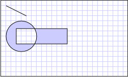

Практическое руководство. Создание составной фигуры
В этом примере демонстрируется создание составной фигуры, применив Geometry объектов и отобразить их с помощью Path элемент. В следующем примере LineGeometry, EllipseGeometryи RectangleGeometry используются с GeometryGroup Создание составной фигуры. Затем рисуются фигуры с помощью Path элемент.
Пример
<!-- Displays the geometry. -->
<Path Stroke="Black" StrokeThickness="1" Fill="#CCCCFF">
<Path.Data>
<!-- Creates a composite shape from three geometries. -->
<GeometryGroup FillRule="EvenOdd">
<LineGeometry StartPoint="10,10" EndPoint="50,30" />
<EllipseGeometry Center="40,70" RadiusX="30" RadiusY="30" />
<RectangleGeometry Rect="30,55 100 30" />
</GeometryGroup>
</Path.Data>
</Path>
// Create a Path to be drawn to the screen.
Path myPath = new Path();
myPath.Stroke = Brushes.Black;
myPath.StrokeThickness = 1;
SolidColorBrush mySolidColorBrush = new SolidColorBrush();
mySolidColorBrush.Color = Color.FromArgb(255, 204, 204, 255);
myPath.Fill = mySolidColorBrush;
// Create the line geometry to add to the Path
LineGeometry myLineGeometry = new LineGeometry();
myLineGeometry.StartPoint = new Point(10, 10);
myLineGeometry.EndPoint = new Point(50, 30);
// Create the ellipse geometry to add to the Path
EllipseGeometry myEllipseGeometry = new EllipseGeometry();
myEllipseGeometry.Center = new Point(40, 70);
myEllipseGeometry.RadiusX = 30;
myEllipseGeometry.RadiusY = 30;
// Create a rectangle geometry to add to the Path
RectangleGeometry myRectGeometry = new RectangleGeometry();
myRectGeometry.Rect = new Rect(30, 55, 100, 30);
// Add all the geometries to a GeometryGroup.
GeometryGroup myGeometryGroup = new GeometryGroup();
myGeometryGroup.Children.Add(myLineGeometry);
myGeometryGroup.Children.Add(myEllipseGeometry);
myGeometryGroup.Children.Add(myRectGeometry);
myPath.Data = myGeometryGroup;
// Add path shape to the UI.
StackPanel mainPanel = new StackPanel();
mainPanel.Children.Add(myPath);
this.Content = mainPanel;
На следующем рисунке показана фигура, созданная в предыдущем примере.

Составные геометрические объекты
Более сложные фигуры, например, многоугольники и фигур с помощью сегментов кривых могут быть созданы с помощью PathGeometry. Пример, демонстрирующий создание фигуры с помощью PathGeometry, см. в разделе Создание фигуры с помощью PathGeometry. Несмотря на то, что в этом примере отображает фигуру на экране при помощи Path элемент, Geometry объектов может также использоваться для описания содержимого GeometryDrawing или DrawingContext. Они также могут использоваться для обрезки и проверки нажатия.
Этот пример является частью большего примера; полный пример см. в разделе Пример геометрических объектов.